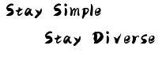

Xiaojie Guo
Florist | Decorator
Florist | Decorator
I am now a tenured Associate Professor with the College of Intelligence and Computing, Tianjin University. My research interest mainly includes Computer Vision, Pattern Recognition, and Machine Learning. Prior to TJU, I spent about 4 fantastic years at SKLOIS, IIE, Chinese Academy of Sciences.
Our lab has several Ph.D. and Master positions this year. We are seeking passionate and innovative students to work on CV/PR/ML.